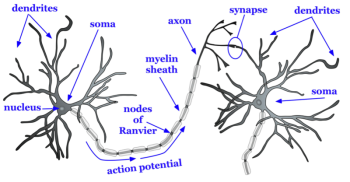
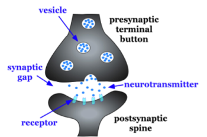

3.2: The Structure of the Neuron
Basic Nomenclature
There are approximately 86 billion neurons in the human brain (Herculano-Houzel, 2009). Each neuron has three main components: dendrites, the soma, and the axon (see Figure 2). Dendrites are processes that extend outward from the soma, or cell body of a neuron, and typically branch several times. Dendrites receive information from thousands of other neurons and are the main source of input of the neuron. The nucleus, which is located within the soma, contains genetic information, directs protein synthesis, and supplies the energy and the resources the neuron needs to function. The main source of output of the neuron is the axon. The axon extends away from the soma and carries an important signal called an action potential to another neuron. The place at which the axon of one neuron approaches the dendrite of another neuron is a synapse (Figures 2 and 3). Typically, the axon of a neuron is covered with an insulating substance called a myelin sheath that allows the signal of one neuron to travel rapidly to another neuron.

The axon splits many times so it can communicate, or synapse, with several other neurons (see Figure 2). At the end of the axon is a terminal button, which forms synapses with spines, or protrusions, on the dendrites of neurons. Synapses form between the presynaptic terminal button (neuron sending the signal) and the postsynaptic membrane (neuron receiving the signal; see Figure 3). Here we will focus specifically on synapses between the terminal button of an axon and a dendritic spine; however, synapses can also form between the terminal button of an axon and the soma or the axon of another neuron.
A tiny space called a synaptic gap, approximately 5 nm (nanometers), exists between the presynaptic terminal button and the postsynaptic dendritic spine. To give you a better idea of the size, the thickness of a dime is 1.35 mm (millimeters) or 1,350,000 nm. In the presynaptic terminal button, synaptic vesicles package together groups of chemicals called neurotransmitters (see Figure 3). Neurotransmitters are released from the presynaptic terminal button, travel across the synaptic gap, and activate ion channels on the postsynaptic spine by binding to receptor sites. We will discuss the role of receptors in more detail later in the chapter.

Media Attributions
- Basic structure of neuron © Noba is licensed under a CC BY-NC-SA (Attribution NonCommercial ShareAlike) license
- synapse © Noba is licensed under a CC BY-NC-SA (Attribution NonCommercial ShareAlike) license


Part of a neuron that extends away from the cell body and is the main input to the neuron.
Cell body of a neuron that contains the nucleus and genetic information and directs protein synthesis.
(plural: nuclei)
In neuroanatomy, nucleus or nuclei refers to a cluster of neurons.
Collection of nerve cells found in the brain which typically serve a specific function.
Part of the neuron that extends off the soma, splitting several times to connect with other neurons; main output of the neuron.
The tiny space separating neurons
Substance around the axon of a neuron that serves as insulation to allow the action potential to conduct rapidly toward the terminal buttons.
The part of the end of the axon that forms synapses with postsynaptic dendrite, axon, or soma.
Protrusions on the dendrite of a neuron that form synapses with terminal buttons of the presynaptic axon.
Also known as the synaptic cleft; the small space between the presynaptic terminal button and the postsynaptic dendritic spine, axon, or soma.
Groups of neurotransmitters packaged together and located within the terminal button.
Chemical substance released by the presynaptic terminal button that acts on the postsynaptic cell.